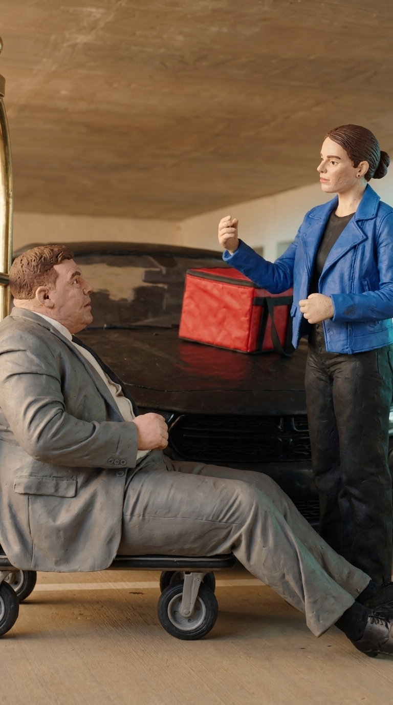

Same fight.
New look.
A new jacket. A familiar fight. Compare our complete action input with the 720p Genjutsu outfit swap it helped guide.
With the $99 upfront pack of 100 credits.
Uses 1 credit per request. No subscription.
Opens Genjutsu. Choose + Upload my own video → Object swap, then open Output settings and choose 720p · 15s · Phone 9:16. Reference creation and extra takes cost more; review the quote and live capacity before buying.
Drag or choose a time to pause both clips at the same elapsed second. The shorter clip holds its final frame. Timing and movement differ.
Loading the comparison…
Use each player’s own controls for the full clip and sound; audio starts muted. Fictional AI adults, internal model tests.

Save the image
Your clip. Your outfit. A new take.
- Choose Genjutsu → + Upload my own video → Object swap.
Add a source clip and a + Add your character, product or outfit image you own or have permission to use. Our input is 14.9 seconds, under the 15-second limit.
- Open Output settings. Choose 720p, 15s and Phone 9:16.
Open Prompt (optional) and paste the successful guided-scene prompt below. Describe the new scene and use the inputs as guidance.
- Choose audio and review the full quote.
The matching guidance option uses 1 credit. Our model test requested source audio. Check your selected mode, inputs, current quote and availability before starting; motion, identity and audio synchronization can vary.
Your next look. 720p from $0.99.
$0.99 per matching 15s/720p request with the $99 upfront pack of 100 credits. Each request uses 1 credit. Reference creation and extra takes cost separately.
Check the current routeStart with a smaller pack.
One credit costs $2.50 once and covers one matching 15s/720p request. No subscription.
The $0.99 rate allocates the optional $99 pack; individual checkout starts at $2.50. A completed request can still need another take.
Customer controls checked 27 October 2026; listed credit rates last reviewed 25 October 2026. The selected request is 15 seconds; the complete received result is 15.072 seconds. Review the current quote and capacity before buying or starting.
Inputs, footage and what changed
The original source was trimmed to 14.9 seconds to meet the input limit. Both players show their complete files. The result was requested at 720p for our internal Seedance 2.5 motion-guidance test and delivered at 720 × 1280 with audio; no local cuts or upscaling were added. Supplier internal generation resolution is not independently verified.
The blue-jacket appearance reference was made with Nano Banana PRO in Studio 2. The courier jacket changes; the fight, red bag, trolley and cake payoff remain recognizable. Timing and other details vary. An earlier edit-worded request failed without producing a video; the guided-scene prompt linked above produced this take.
This is our internal model demonstration, not a customer case or a production checkout/delivery test. The customer setting and price are separate from supplier credits. A matching quote does not guarantee a usable take.
Budget comparison: a separate 480p clay remake
This older style-transfer experiment trades resolution for a lower request allocation. It is separate from the 720p outfit-swap result above.


Save the image
Your clip. A look. A new take.
- Choose Genjutsu → + Upload my own video → Restyle.
Open Prompt (optional) and paste our actual style prompt below, or write your own. Use a clip and style image you own or have permission to use.
- Set 480p and 15 seconds.
Under Quality and duration choose 480p · 15s, then aspect ratio 9:16. Add one + Add a style reference image and one source video. Our source is 14.9 seconds, under the 15-second input limit.
- Review the full quote before starting.
The current matching option lists 0.5 credit. Our earlier matching quote used Source video audio and $1.25 cash balance. Choose the audio and payment method you need; check your exact format, inputs and current capacity. Guidance does not guarantee matching audio, motion or identity.
Your next look. From $0.495.
$0.495 per 15s/480p request with the $99 upfront pack of 100 credits. Each matching request uses 0.5 credit. That gives you 200 requests at this setting, before reference creation and extra takes.
Explore Genjutsu in Studio 2Want a smaller first purchase?
One credit costs $2.50 once and covers two requests at this setting. The cash-balance rate is $1.25 per request.
The $0.495 offer allocates the $99 pack; individual checkout starts at $2.50. Reference-image creation and extra takes cost more. A completed request can still need another take.
Settings and listed credit rates checked 25 October 2026. An earlier native matching quote was reviewed and cancelled without starting a generation. The complete received model-test result above is 15.072 seconds; the selected request format is 15 seconds. Live availability and creative results vary.
What changed, and how we made this example
The source and result use fictional AI adults. Nano Banana 2 created the actual clay reference from our owned blue-jacket image. The source is our complete 14.9-second input clip; the result is the complete 480 × 854 file received with its audio, without cuts or upscaling.
The punch, trolley and cake remain recognizable, but the cake’s appearance and final tasting gesture change. Compare both complete clips before choosing guidance for a scene where exact product details, timing or movement matter.
The footage was made through the earlier Motion Remix style workflow. Genjutsu’s + Upload my own video → Restyle path exposes the matching Seedance 2.5 guidance format, 480p, 15s and source-audio option. Add the actual style prompt under Prompt (optional). The curated dance and scene references are separate options, not tested by this example.
This is an internal Seedance 2.5 model test, not a customer case or a production Studio 2 checkout/delivery test. The earlier matching Studio 2 quote is separate evidence of the listed customer setting and price. Neither guarantees a usable take.